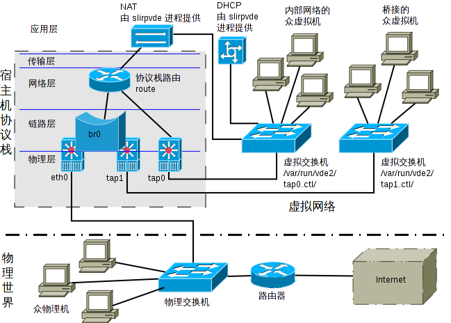

虚拟机及网络终极方案(VBox与KVM 齐行)(2012-03-06更新)
原文：http://forum.ubuntu.com.cn/viewtopic.php?f=65&t=360580
最后由 自由建客 编辑于 2012-03-08 19:37，总共编辑了 35 次
环境
- Debian 6 squeeze
- Ubuntu 兼容，其特别之处文中均有说明
虚拟机安装
VirtualBox
# ============================================================================ # 虚拟机（VirtualBox） # http://www.virtualbox.org/wiki/Linux_Downloads cd /tmp wget http://download.virtualbox.org/virtualb ... e_vbox.asc apt-key add oracle_vbox.asc rm oracle_vbox.asc cd - cat >> /etc/apt/sources.list <<EOF deb http://download.virtualbox.org/virtualbox/debian squeeze contrib non-free EOF aptitude update aptitude search virtualbox aptitude install -R dkms virtualbox-4.1 # ---------------------------------------------------------------------------- # 入组 gpasswd -a $XXX vboxusers
非 Debian squeeze 系统的源列表请参看 VBox 官网说明。必须注意，只要你那系统版本对应的那一行便是，加多了定会造成混乱。不清楚自己所用版本名称的去这里看: Debian Ubuntu
顺便说句，少数情况下， VBox 可能无法使用 USB 设备，对此可用下面 qemu / kvm 那招（给 plugdev 组赋予操作权）解决。
Qemu / KVM
# ============================================================================
# 虚拟机（qemu / kvm）
aptitude install -R qemu-system qemu-utils qemu-kvm
rm -f /lib/udev/rules.d/60-qemu-system.rules
# 若主机用 64 位系统，将默认 qemu 设为 qemu-system-x86_64 更妥
update-alternatives --config qemu
# 给 plugdev 组（不推荐 kvm 组）赋予 USB 设备操作权，不与 VBox 冲突，放心使用
vi /etc/udev/rules.d/10-usb-plugdev.rules #{
SUBSYSTEM=="usb_device", GROUP="plugdev", MODE="0664"
SUBSYSTEM=="usb", ENV{DEVTYPE}=="usb_device", GROUP="plugdev", MODE="0664"
#}
# ----------------------------------------------------------------------------
# 入组
gpasswd -a $XXX kvm
# 若尚未入 plugdev 组，则再
gpasswd -a $XXX plugdev
若无需模拟 ARM 等非 x86 架构，只要安装 qemu-kvm 即可。
Debian / Ubuntu 中 qemu-system（含 qemu 命令）与 qemu-kvm（含 kvm 命令）并不冲突。奇特的是， qemu 命令在 -enable-kvm 时只能使用单处理器，kvm 命令能用多核但在未加载 kvm 模块时并不出错而自动转用软模拟从而导致系统缓慢。所以最好两者都装上，然后根据需要用哪个命令。基本上 kvm 命令可看作就是自动带上 -enable-kvm 的 qemu 命令。
若只安装 qemu-system 而又不愿意安装 qemu-kvm，为了能自由切换 VBox 和 kvm，则应当提取 qemu-kvm 包中的 /etc/init.d/qemu-kvm 文件。
qemu-utils 包含的工具 qemu-kvm 中都有，貌似仅命令名不同而已。另，Ubuntu 11.10 并不含该包。
个人认为，qemu-system 应当是 qemu-kvm 的超集且两者互斥更为妥当。需要更多功能的就只装 qemu-system，否则就只装 qemu-kvm。
VBox / KVM 切换
# ============================================================================
# VBox / KVM 切换
#tar xf "${LOCALPKG}/swapvm.tar.gz" -C /
cat > /usr/local/bin/swapvm <<EOF
#!/bin/sh
set -e
case "\$1" in
kvm)
if [ \`lsmod | awk '\$1=="vboxdrv" {print \$3-split(\$4,a,",")}'\` -ne 0 ]; then
echo "ERROR: Module vboxdrv is in use" >&2
exit 1
fi
/etc/init.d/vboxballoonctrl-service stop
/etc/init.d/vboxweb-service stop
/etc/init.d/vboxdrv stop
/etc/init.d/qemu-kvm start
;;
vbox)
/etc/init.d/qemu-kvm stop
/etc/init.d/vboxdrv start
/etc/init.d/vboxweb-service start
/etc/init.d/vboxballoonctrl-service start
;;
*)
echo "Usage: \$0 {kvm|vbox}" >&2
exit 2
;;
esac
exit 0
EOF
chmod 755 /usr/local/bin/swapvm
# 设置特权，方便切换
visudo #{
%kvm localhost= /usr/local/bin/swapvm
%vboxusers localhost= /usr/local/bin/swapvm
#}
# 若以 KVM 为主 VBox 为辅
insserv -r vboxballoonctrl-service
insserv -r vboxweb-service
insserv -r vboxdrv
# 若以 VBox 为主 KVM 为辅
insserv -r qemu-kvm
VBox 与 KVM 的模块虽可同时加载，但无法同时使用，后加载的会令先加载的无效（后来居上）。若要同时运行两种虚拟机，必然有一种无法使用处理器的虚拟化技术而用纯软件模拟。所以，用 swapvm 命令切换也只不过是权宜之计。
虚拟机网络终极方案
说终极难免有些夸张，但应该可以说是“已经能较好地满足大部分人的需求”了。或许你的需求没这么苛刻，简单的桥接一台虚拟机或用虚拟机自己的 NAT 或 USER 模式即可满足，但也不妨看上一眼。
需求
- 能同时将多台虚拟机置于与宿主机同一网络之中（桥接多台虚拟机），从而使各虚拟机各物理主机都能两两通信。
- 能将多台虚拟机置于一个内部局域网之中，以隔离更多的物理主机。但保证各虚拟机和宿主机之间可两两通信，同时能上因特网。
- 统一 VBox、 Qemu 或 KVM 网络。当然， VBox 和 KVM 受限于内部机制而不能同时运行，但和 Qemu 同时运行没有任何问题。
- 普通账户或某特定组即可操作（无须 root 账户或 sudo）。
网络结构

- Openstack Nova Network Topology(Flat)
安装配置
前提：剥夺 network-manager 对 eth0 的控制权，断线重连交由 ifplugd 负责。
ifplugd 网卡监视器
# ============================================================================
# 安装 ifplugd 网卡监视器
aptitude install -R ifplugd
tar xf "${LOCALPKG}/ifplugd-action.tar.gz" -C /
vi /etc/default/ifplugd #{
INTERFACES="eth0"
ARGS="-q -f -u3 -d10 -I"
#}
ifplugd-action.tar.gz是用于桌面状态提醒的扩展，此处并不附包，其下载及相关信息请看《令 ifplugd 支持网桥和弹出消息》。若链接已死请看我签名，若未直接显示相关信息，请点击【更多在此】！
/etc/default/ifplugd 中的 ARGS 默认或许有 -w，务必要将其去掉，否则在开机时将要花上很长的时间等待获取 IP，如果你用 DHCP 的话。
虚拟网络基本工具
# ============================================================================ # 虚拟网络 aptitude install -R bridge-utils vde2 # VBox 需要 libvdeplug.so，否则无法连接 VDE cd /usr/lib/ ln -s libvdeplug.so.2.1.0 libvdeplug.so cd -
此二包或许已安装，但此处仍显式说明以求强调。
配置网络
# ----------------------------------------------------------------------------
# 网络配置
vi /etc/network/interfaces #{
auto lo tap0
#allow-hotplug eth0
iface lo inet loopback
pre-up iptables-restore </etc/network/iptables.rules || true
pre-up [ "`runlevel`" = "unknown" ] && echo 'eth0=br0' >/var/run/ifplugd.map || true
#pre-up runlevel >/root/runlevel
iface eth0 inet dhcp
pre-up ifdown br0
post-up sed -i '/^eth0=/d' /var/run/ifplugd.map || true
## NAT
iface tap0 inet static
address 192.168.10.1
netmask 255.255.255.0
vde2-switch -
vde2-slirp -n 192.168.10.0 -dhcp
up ifconfig tap0 down
up ifconfig tap0 hw ether 52:53:00:00:00:00
up ifconfig tap0 up
## Bridge
iface tap1 inet static
address 192.168.0.1
netmask 255.255.255.0
vde2-switch -
up ifconfig tap1 down
up ifconfig tap1 hw ether 52:53:00:00:00:01
up ifconfig tap1 up
iface br0 inet dhcp
pre-up ifdown eth0
pre-up ifup tap1
pre-up ifconfig tap1 0.0.0.0
bridge_ports eth0 tap1
post-up sed -i '/^eth0=/d' /var/run/ifplugd.map || true
post-up echo 'eth0=br0' >>/var/run/ifplugd.map
#}
eth0 和 br0 构成互斥项，启动任何一个将自动停止另外一个。
tap1 可随 br0 启动但绝不可随 br0 关闭，因为 tap1 连接着若干虚拟机，不可轻易断开。
tap1 中 address 与 netmask 纯粹摆设，因为那是 static 方式必须的字段。不能用 manual 方式，因为那将导致 vde_switch 并不与之连接。
tap0、tap1 最后都有三行为其专门特设一物理地址，以便于管理和使用。
无论开机时是要自动启动 eth0 还是启动网桥 br0， auto 与 allow-hotplug 行都不要填写 eth0 及 br0，我们利用 ifplugd 代劳。因为网桥通过 DHCP 获取 IP 太慢了， ifplugd 可在后台工作而不会拖延开机时间。
若希望一开机就能使用网桥，则应启用“iface lo”下面有“eth0=br0”那行，上例便是如此。若希望开机时自动启动 eth0 而不要网桥，则应注释掉该行。注意，该行是一个而不是两个大于号。
若启用了“eth0=br0”行但实际上开机后见到的只是 eth0 而不是 br0，则说明“[ "runlevel" = "unknown" ]”那里判断有误，只要临时开启下面一行“pre-up runlevel >/root/runlevel”并重启后查看 /root/runlevel 文件，将其内容替换掉“unknown”再重启即可。
设置特权
# ----------------------------------------------------------------------------
# 设置特权，方便切换
visudo #{
%vde2-net localhost= /sbin/ifup br0
%vde2-net localhost= /sbin/ifup eth0
%vde2-net localhost= /sbin/ifup tap0, /sbin/ifdown tap0
%vde2-net localhost= /sbin/ifup tap1, /sbin/ifdown tap1
#}
# ----------------------------------------------------------------------------
# 入组
gpasswd -a $USERNAME vde2-net
br0 和 eth0 只有 ifup 而没有 ifdown，正如前面所说——互斥。
之所以对 vde2-net 组启用特权在于最小化风险范围，因为要使用 vde 的账户必然是该组成员。
至此，凡是连接到 /var/run/vde2/tap0.ctl/ 的所有虚拟机都处于一内网之中，宿主机通过 tap0 加入该网络。所以宿主机和各虚拟机两两通信绝无障碍。 slirpvde 进程提供 DHCP 和 NAT 服务，以使该局域网中的机器能访问外网。当然，高级用户也可不用 slirpvde 而配置 iptables。
同理，凡是连接到 /var/run/vde2/tap1.ctl/ 的所有虚拟机都为桥接，与宿主机处于同一网络之中。 此处可连接多台虚拟机，而不再仅限一台，因为我们用了“交换机”，虚拟机接的是交换机而不是宿主机的 tap1。
正常使用虚拟机时并不需要 sudo 等提权手段。
何时用桥接
如果你只是想宿主机能访问虚拟机的服务或者各虚拟机之间能相互通信，那请用 NAT。
只有在你确定宿主机之外的其它物理主机需要访问你的虚拟机时才用桥接。
桥接是一种依赖外部网络的接入方式，如果外部网络出现问题（比如宿主掉线），那宿主机和虚拟机也将断掉联系。所以说没事别用桥接。
感慨
Debian 的 ifupdown 确实是个灵活统一而又优雅的机制。
其实整个配置并不难，关键在于你想要什么。总归一句“拓扑明而众结解”。
附:连接 VDE 示例
请配合相应虚拟机文档共同参考。
- Qemu / KVM：
启动参数加 -net vde,sock=...
-net nic,model=rtl8139,macaddr=52:53:00:00:08:01 -net vde,sock=/var/run/vde2/tap1.ctl
-
VirtualBox（两种方法）
-
其一：命令行：
# 在关闭相应虚拟机（例如 vm-debian1）的情况下，执行下述命令，一次便可，日后可照常启动虚拟机 VBoxManage modifyvm vm-debian1 --nic1 generic VBoxManage modifyvm vm-debian1 --nicgenericdrv1 VDE VBoxManage modifyvm vm-debian1 --nicproperty1 network=/var/run/vde2/tap1.ctl
-
其二：图形界面设置
网络设置页 -> 连接方式 -> Generic Driver -> 界面名称 -> VDE -> 高级 -> Generic Properties（属性） -> 输入“network=/var/run/vde2/tap1.ctl” -> 确定。
-
其一：命令行：
关于VDE
http://forum.ubuntu.org.cn/viewtopic.php?f=65&t=389491
- VDE - Virtual Distributed Ethernet,虚拟以太网，是一个以太网兼容的虚拟网络
- 主要特点：支持VLAN、Fast Spanning Tree Protocol、Command line management
- 官网：http://vde.sourceforge.net/
- 文档：http://wiki.virtualsquare.org/wiki/index.php/VDE
-
当启动vde_switch，有几个自定义选项：
- 端口数、工作模式、交换机的MAC地址、配置文件、管理接口的权限、数据接口的权限、tap接口
-
使用范例：
vde_switch - 默认选项：默认工作目录为 /tmp/vde.ctl，默认应用模式是2700，按回车键进入vde_switch命令管理介面。
-
常用管理命令：
vde$ help -
启动守护进程
-
vde_switch --daemon --sock /tmp/myvde.ctl --mgmt /tmp/myvde.mgmt -
现在可以通过unix socket /tmp/myvde.mgmt 连接管理虚拟交换机:
vdeterm /tmp/myvde.mgmt
-
-
vde的socket是标准的PF_FILE stream socket，可用socat连接：
socat READLINE unix:/tmp/muvde.mgmt -
连接tap接口
tunctl -u username -t tap0 ifconfig tap0 192.168.0.1 netmask 255.255.255.0 vde_switch --tap tap0 vde: port/allprint 0000 DATA END WITH '.' Port 0001 untagged_vlan=0000 ACTIVE - Unnamed Allocatable -- endpoint ID 0006 module tuntap : tap0
-
dpipe: 连接两个vde_plug(dpipe也被称为双向的管道)，能够运行两个或多个命令的第一个命令的标准输出转移到第二个命令的标准输入，反之亦然。
#连接两个vde_switches dpipe vde_plug /tmp/vde1.ctl = vde_plug /tmp/vde2.ctl #本地的vde_switch连接到远程vde_switch并使用了安全ssh通道 dpipe vde_plug /tmp/vde.ctl = ssh foo@remote.host.org vde_plug /tmp/vde_remote.ctl #vde_switch通过netcat监听UDP端口8000，数据未作加密 dpipe vde_plug /tmp/vde.ctl = nc -l -u -p 8000 # 这个例子，本地vde_switch通过netcat客户端连接到远程机器 dpipe vde_plug /tmp/vde_local.ctl = nc -u 8000 remove.host.address.org # 开启vde_cryptcab服务监听UDP 12000端口 vde_cryptcab -s /tmp/vde.ctl -p 12000 # 开启vde_cryptcab，通过ssh认证连接到远程UDP 12000端口 vde_cryptcab -s /tmp/vde_local.ctl -c username@remote.host.org:12000
-
wirefilter
-
用于测试的一个工具，模拟真实网络的连接问题，如：延时、丢包等；此工具可插入一个双向管道在两个vde_switches间引入虚拟错误长限制。
# wirefilter是个双向的管道，连接在两个vde_switches之间。这有可能从左向右或从右向左过滤，可以通过wirefilter指定的socket连接管理wirefilter: dpipe vde_plug /tmp/vde1.ctl = wirefilter -M /tmp/wiremgmt = vde_plug /tmp/vde2.ctl
-
wirefilter参数：
- 丢包百分比
- 数据包的传输延迟
- 数据包重复的百分比
- 信道带宽
- 接口速度
- 数据包队列的最大容量
- 最大传输单元
- 每兆字节损坏的位
- 包的排序
-
用于测试的一个工具，模拟真实网络的连接问题，如：延时、丢包等；此工具可插入一个双向管道在两个vde_switches间引入虚拟错误长限制。
-
slirpvde
- slirpvde是一个SLIRP的接口，它就像一台路由器连接到vde_switch，提供NAT、DHCP、DNS请求重新映射等。
-
slirpvde -d -s /tmp/vde.ctl -dhcp - 启动slirpvde并指定连接vde_switch的socket提供外部网络访问，额外的-dhcp参数告诉slirpvde提供DHCP服务。
-
slirpvde6
- slirpvde6是一个根据LWIPv6新实施slirpvde,同时支持IPv4和IPv6。
-
slirpvde6 -d -s /tmp/vde.ctl -dhcp - 在这里，slirpvde6提供一个IPv4 SLIRP服务。的默认网关地址是10.0.2.1/24。
-
slirpvde6支持多个地址，用户可以指定IPv4和IPv6地址的任意组合:
-
slirpvde6 -d -H10.0.2.1/24 -H2001::1/64 -s /tmp/vde.ctl -dhcp -r -
-r选项是启动的路由器守护进程自动配置
-
-
debian常用vde2配置:/etc/network/interfaces
#开机启动tap0,连接到vde虚拟交换机tap0,设置IP地址,启动vde2-slirp提供NAT服务 auto tap0 iface tap0 inet static address 172.16.10.254 netmask 255.255.255.0 vde2-switch - vde2-slirp -n 172.16.10.0 #开机启动tap1,连接到vde虚拟交换机tap1,设置IP地址,启动vde2-slirp提供NAT、DHCP服务 auto tap1 iface tap1 inet static address 172.16.100.254 netmask 255.255.255.0 vde2-switch - vde2-slirp -n 172.16.100.0 -dhcp #开机启动tap2,连接到vde虚拟交换机tap2,设置IP地址 auto tap2 iface tap2 inet static address 172.16.20.254 netmask 255.255.255.0 vde2-switch -
-
kvm中连接到VDE
# 设置使用virtio网卡，设置MAC地址"52-55-00-12-01-01" # 连接VDE,sock的路径为/var/run/vde2/（默认位置），tap1.ctl对应VDE交换机的名称 -net nic,model=virtio,macaddr=52-55-00-12-01-01 \ -net vde,sock=/var/run/vde2/tap1.ctl